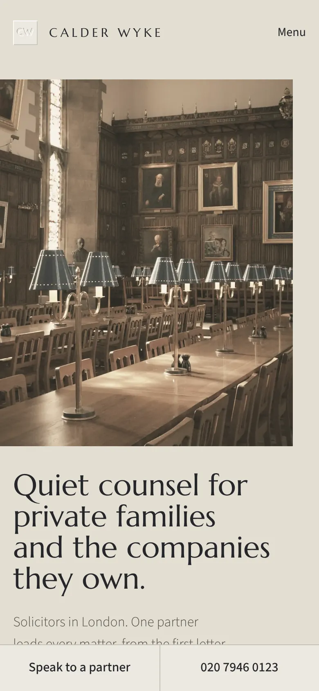
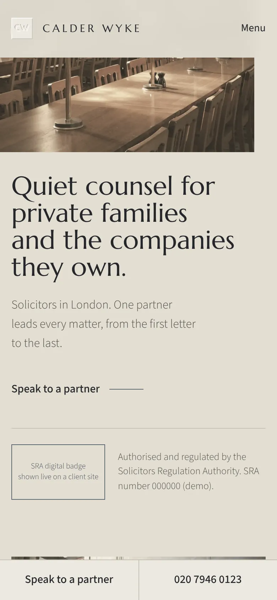
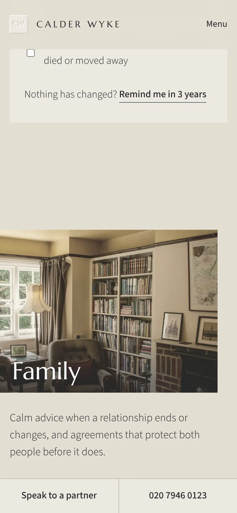
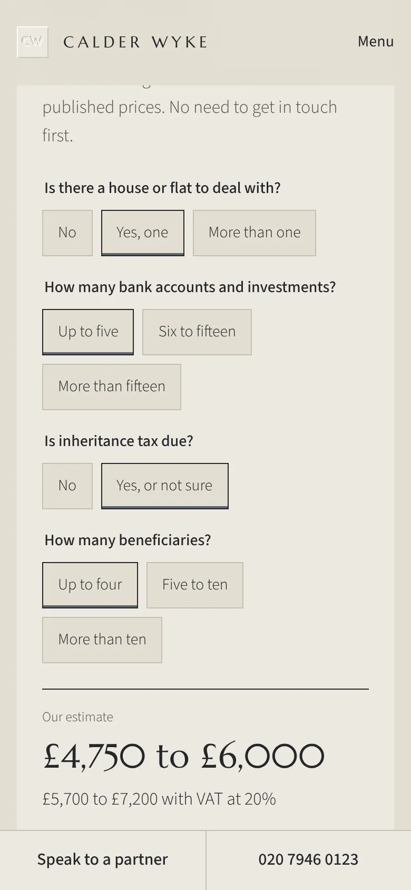
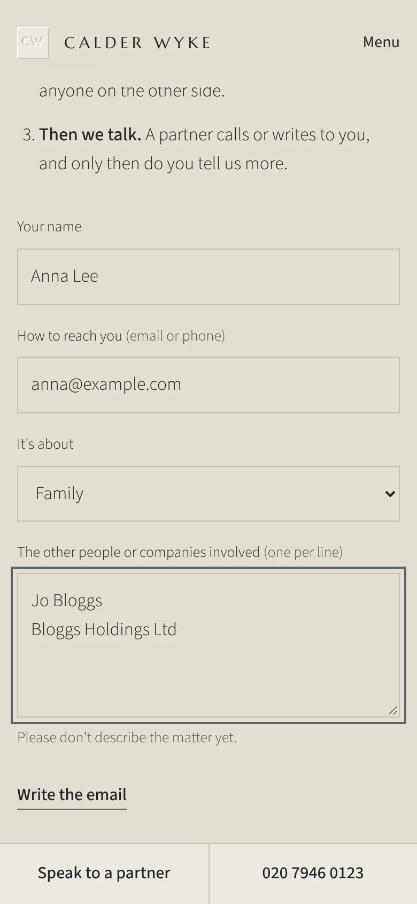
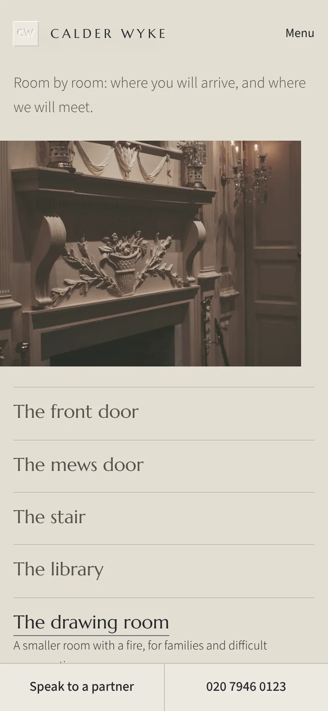
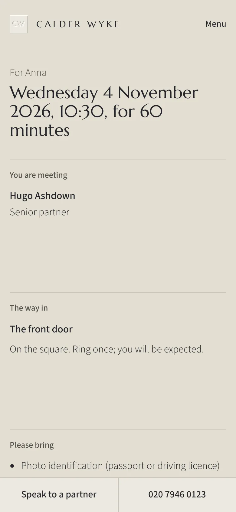
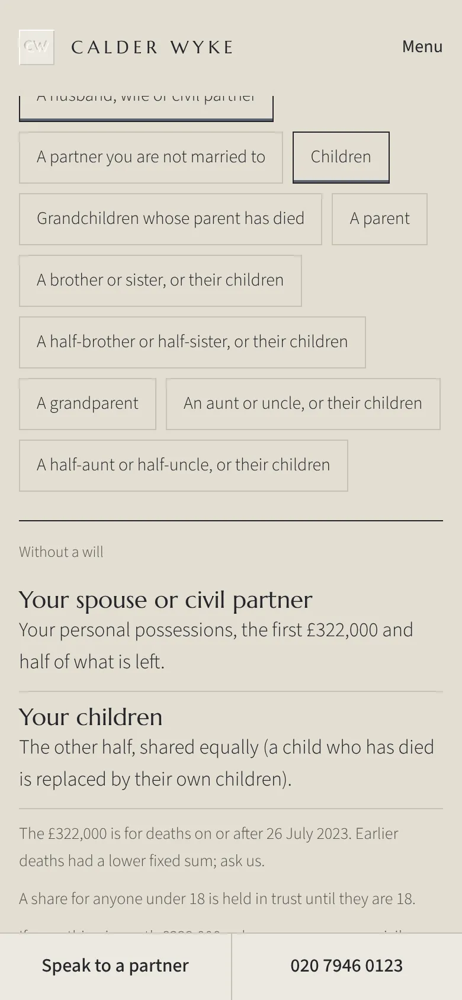
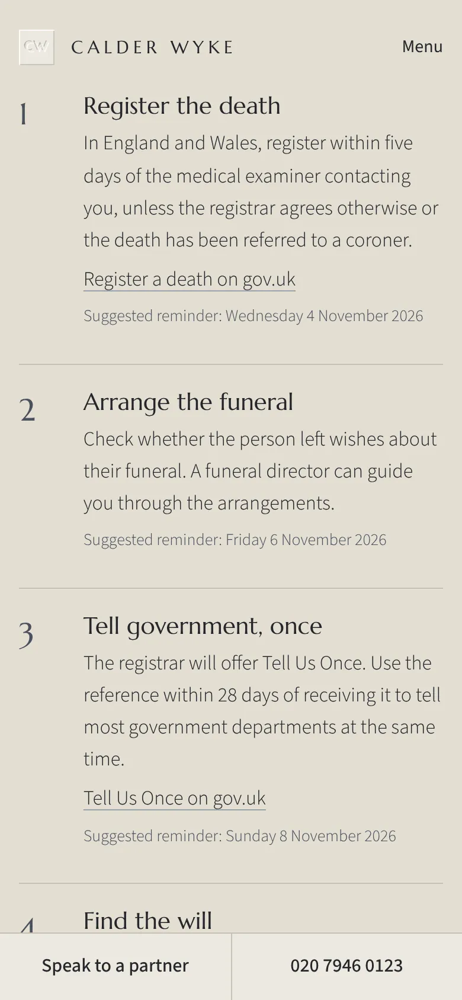
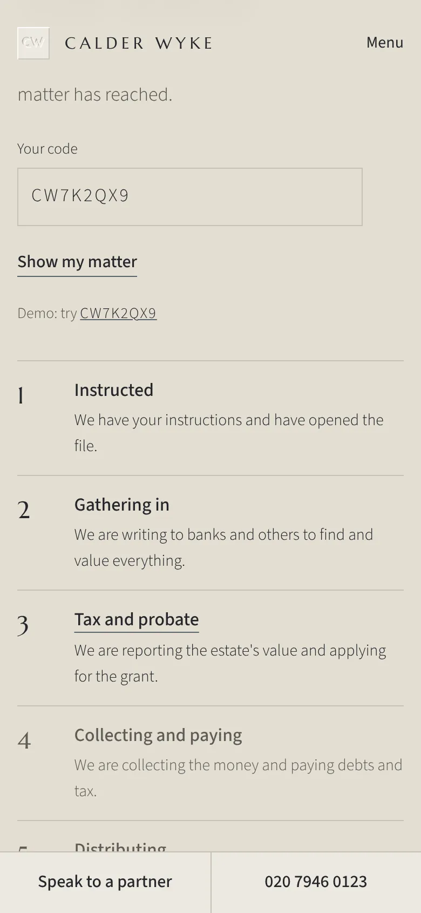

Case study · Law firm · Calder Wyke
This Deed
is made between a private firm of solicitors and the website that had to earn its trust before anything else.
- Calder Wyke, solicitors in London: private wealth, family, estates, disputes, charities and family companies. A fictional firm.
- Its website, built by Sitefloor on the law kit, in the Portland look.

Recitals
- A family chooses a firm on trust, long before it reads a word about the law.
- The regulator asks every firm to show its number, its badge, its complaints procedure and, for some work, its prices.
- Some clients would rather nobody saw them arrive.
Now this deed provides
Trust, before anything
- 1.1
The regulator's badge sits directly under "Speak to a partner", and the firm's SRA number is on every page.
- 1.2
Every solicitor is shown with their own SRA ID. Prices, complaints and how to reach the Legal Ombudsman are free pages on every plan.
- 1.3
A real firm's site won't build without its real number and its badge. A demo can only ever show 000000.

The firm, seen from inside
- 2.1
The home page opens in the firm's own library, not on its front door. The practice is set large, as an index beside the stair.
- 2.2
Each practice opens on its own photograph: what the firm does, who leads it, what to read, and only the facts the firm itself has published.
- 2.3
Every matter is shown step by step, in the firm's own stages, with what the client does at each.

The price of probate
- 3.1
Every price the regulator asks for is published, with VAT, the disbursements, the stages and who does the work.
- 3.2
Four answers give an estimate from those published prices, without getting in touch first.
- 3.3
No answer can take the estimate outside the firm's own range. The site refuses to build if one could.

Who is involved, first
- 4.1
A firm must check it doesn't act for anyone on the other side before it hears a confidence.
- 4.2
So the first message carries only names and how to reply. The visitor's own email app sends it; the site sends and stores nothing.
- 4.3
"Speak to a partner" shows the partner who leads the chosen practice, with a direct line, and the firm's hours in the visitor's own time zone.

Arriving unseen
- 5.1
Before a visit the client knows which door, where to leave the car and who will open it.
- 5.2
The house is shown room by room: the front door, the mews door, the stair, the library, the drawing room.
- 5.3
The first-meeting pack lives in the link the firm sends. Nothing about the client is stored anywhere, and it adds the meeting to their calendar.


If there's no will
- 6.1
Tap who in the family is alive, and see who would inherit under the rules of England and Wales.
- 6.2
Every rule is dated and sourced on the page. It is general information, never advice.
Try it: the rules of England and WalesGeneral information
General information about England and Wales, not advice. Checked 2 November 2026 against HMRC manual TSEM7826, TSEM7830 and Citizens Advice.

When it matters most
- 7.1
When someone has died: the first steps in order, the official links, and gentle reminders for the family's calendar. Reminders, never deadlines.
- 7.2
What to gather before a first meeting, ticked on the visitor's own phone. Words we use, in plain English.
- 7.3
Your matter, by code: the stage it has reached, from a sheet that holds only a code, a stage and a time. Never a name.


The schedules
Schedule 1
Starter
£99, then £25 a month
- The home page: the library, the practice index, Speak to a partner, regulation
- The SRA badge and number, every solicitor's SRA ID
- Prices, complaints and Plan your visit, free
- Words we use
Schedule 2
Plus
£199, then £30 a month
- Up to five pages: practice, people, insights, contact
- Each matter step by step
- Conflict-safe first contact
- Discreet arrival, our day in yours
- When someone has died, what to gather, the will review reminder
Schedule 3
Signature
£349, then £35 a month
- Up to 20 pages, a page for each practice
- The probate estimator, if there's no will
- The house, room by room, and the first-meeting pack
- Guides, approved matters, your matter by code
- The succession map, as an illustration
Time is of the essence
- Lighthouse, phone
- 96–100home and practice pages
- Accessibility
- 100no serious issues on any page
- Largest paint
- 1.6–2.6 sthe library, on a phone
- Layout shift
- 0nothing moves as fonts arrive
Executed
Executed as a deed, and delivered on the day it is dated.
Sitefloor
Websites for UK businesses, each one unlike the last.